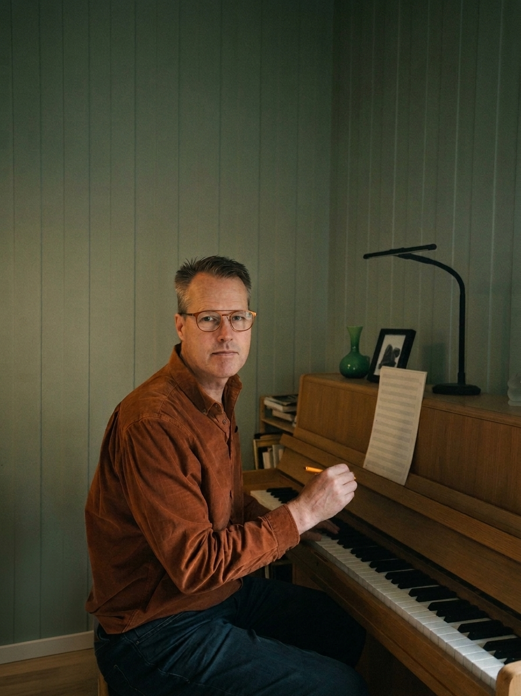

About
Geir Solerød is a Norwegian composer, lyricist and arranger.
Solerød combines melodic clarity and tonal harmony with classical counterpoint, dramatic narrative and colorful orchestration. His music emphasizes strong thematic flow, acoustic warmth and practical playability for performing ensembles.
A member of the Norwegian Society of Composers (NKF).
Latest News
Selected Works
Concert Band & Wind Ensembles
A melodic and colorful five-movement concert suite written for Ulefoss Musikkorps / Concert Band, based on themes from the opera-musical Marko and Adriane. Two individual movements (Seierens Nederlag and Market in Lydia) have received early premiere performances.
Featured Movement: Part 2 – Market in Lydia (ca. 2:45)
Complete score-video with audio simulation. Adriane arrives on market day in Lydia amidst bustling stalls and a royal procession, portrayed through lively rhythms, playful woodwinds, and a brass chorale finale.
Performance Formats & Options...
Flexible Performance Formats: Playable as standalone pieces, a complete five-movement suite, with narrator, or as stage music — featuring extensive cross-cueing for flexible instrumentation and smaller ensembles.
Symphonic & Orchestral Works
A substantial orchestral work structured across three expansive movements. Rather than adhering strictly to traditional symphonic forms, the piece unfolds organically—anchored by distinct core themes interwoven with freer episodic ideas. Lyrical melodic lines and rich harmonic warmth are juxtaposed with moments of rhythmic propulsion, dramatic weight and powerful momentum.
Work Preview & Themes (Audio Teaser):
A short introduction and thematic excerpts across all three movements (audio simulation via NotePerformer).
Stage & Dramatic Works

From the 2022 premiere at Villa Lunde, featuring Gunnar A. Nieland (Loriel), Stina S. Levvel (Adriane), and Magnus D. Kjeldal (Marko).
A full-scale dramatic stage work fusing lyrical vocal storytelling, choral grandeur and colorful chamber orchestra orchestration. Complete concept, libretto and score composed by Geir Solerød. Excerpts received their premiere at Villa Lunde in 2022 under the direction of Jakob Zethner. The rich thematic material also serves as the foundation for the Suite for Concert Band.
Published Scores, Materials & Archival Video...
Published Scores (2023):
- Full Score (Chamber Orchestra, 2 volumes)
- Piano / Vocal Reduction (2 volumes)
Printed editions can be ordered directly from the composer or via the Villa Lunde shop.
Archival recording (22 min video excerpts) is available upon request: Request Video Link
Choral & Vocal Music
Expressive sacred and secular choral pieces emphasizing natural vocal phrasing, rich voice leading and evocative textual setting (including Velsigne dette land), alongside concert arias and duets drawn from dramatic stage works. Explore available scores directly in the catalog.
Libretti, Lyrics & Texts
Alongside musical composition, Solerød maintains an active writing practice focused on dramatic storytelling, libretti, and vocal phrasing.
- Stage & Libretti: Libretto for Marko and Adriane, songs for Marmeladeby, and scripts for children's theatre.
- Vocal Texts: Over 100 registered lyrics, sacred anthems, and concert texts.
- Fiction: Published poetry collections and youth prose, including the short story Stien til innsjøen
Complete Catalogue of Works
Detailed movements, instrumentation, perusal score requests, vocal reductions, audio previews, and archive releases.
Complete Catalogue
Biography & Background
Artistic Background & Profile
Geir Solerød is a Norwegian composer and arranger whose work centers on classical compositional craftsmanship, organic voice leading, accessibility and musical integrity.
Originally from Toten, later based in the Bergen area for many years and now living in Nome, Telemark, his musical path began in songwriting, melodic folk-pop and children’s musical theatre as a singer, multi-instrumentalist and independent producer. Practical experience performing in opera choruses, concert bands (clarinet) and stage productions provides a genuine, firsthand understanding of acoustic balance and ensemble writing.
Since 2017, combining dedicated studies in music theory with practical composition, Solerød has produced major works for symphony orchestra, stage, concert band and choir. His music prioritizes an organic flow rooted in clear thematic architecture, shaped to ensure that every voice feels rewarding to play and accessible to both performers and audience.
- • Norwegian Society of Composers (NKF), TONO
- • Clarinetist, choral tenor, assistant conductor
- • Independent music producer & sound engineer
- • 2026: Symphony No. 1
- • 2024–2026: Suite for Concert Band
- • 2022: Marko & Adriane
- • Catalogue: 120+ songs & choral works
Prior to focusing exclusively on classical composition, Solerød wrote, produced and released independent acoustic folk-pop and songs. A selection of these earlier studio productions and recordings is archived on Bandcamp.